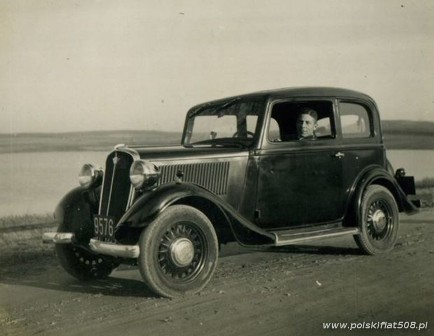

Polski Fiat 125p
 Fiat w Polsce był znany już przed wojną. W 1921 roku planowano budowę fabryki tej marki w Warszawie, a skończyło się jednak tylko na stacji obsługi ich pojazdów. Dziesięć lat później, w 1931 roku podpisano umowę licencyjną na montowanie modeli 508 i 621 przez Państwowe Zakłady Inżynierii w Warszawie. Na rynku model 508 w wersji I (widoczny na zdjęciu) funkcjonował również pod marką „Polski Fiat”.
Po wojnie warszawskie zakłady samochodowe zmuszone były prowadzić inną politykę produkcyjną. Produkowane były samochody Warszawa (w oparciu o konstrukcję radzieckiej Pobiedy) oraz samochody małolitrażowe Syrena. Ponieważ oba te pojazdy były mocno przestarzałe, pojawiło się zapotrzebowanie na auto bardziej zaawansowane technologicznie.
Jak można przeczytać w portalu Auto Świat, aby PRL kupiła licencję na włoskiego sedana, Józef Cyrankiewicz i Edward Gierek zapewniali Władysława Gomułkę, że „socjalizm nie dozna żadnego uszczerbku przez współpracę z zachodnim partnerem”. Wybór licencji Fiata był nie tylko podyktowany tradycją przedwojennej współpracy, lecz przede wszystkim konkurencyjnymi warunkami zaproponowanymi przez Włochów. Ze strony Włochów umowę podpisał dyrektor Fiat Auto Armando Fiorelli, który organizował produkcję Fiata w Polsce w okresie międzywojennym. W 1965 roku podpisywano umowę licencyjną na produkcję, a pierwsze egzemplarze wyjechały z fabryki w 1967 roku. Dzięki umowie unowocześniono całą warszawską Fabrykę Samochodów Osobowych.
Do 1991 roku wyprodukowano około 1,5 miliona egzemplarzy w wersji sedan, kombi, pick-up i innych. Przeprowadzane modernizacje niestety zubażały fiata. W roku 1978 wprowadzono następcę, Poloneza, oba modele produkowane były jednak równocześnie aż do 1991 roku. Dziś duży fiat, zwłaszcza z pierwszych lat produkcji (do 1973 roku), jest poszukiwanym i drogim klasykiem.